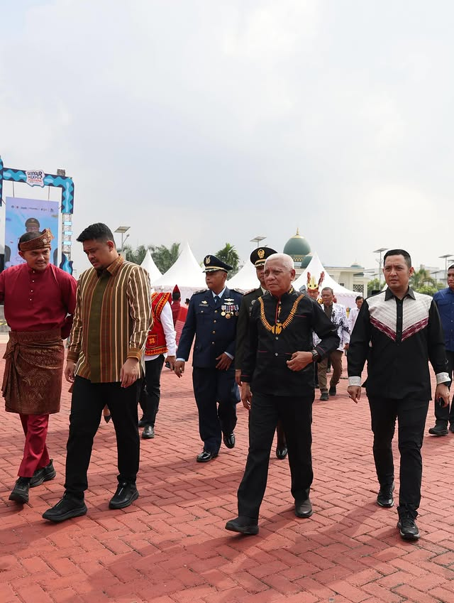

Portfolio
Kegiatan dan Dokumentasi

9 Mei 2026
Dies Natalis ke-40 Universitas Asahan
Mendampingi Wakil Gubernur Sumatera Utara dalam kegiatan Jalan Semarak Dies Natalis Universitas Asahan bersama civitas akademika dan masyarakat.

8 Mei 2026
Festival Kesenian Sumatera Utara 2026
tMendampingi Wakil Gubernur Sumatddera Utara dan Pejabat Sekretaris Daerah Provinsi Sumatera Utara dalam Festival Kesenian Sumut 2026.

2026
Koordinasi Pemerintahan
Terlibat aktif dalam berbagai agenda strategis pemerintahan daerah serta penguatan koordinasi birokrasi di lingkungan Pemerintah Provinsi Sumatera Utara.
Terhubung dan Ikuti Aktivitas Saya